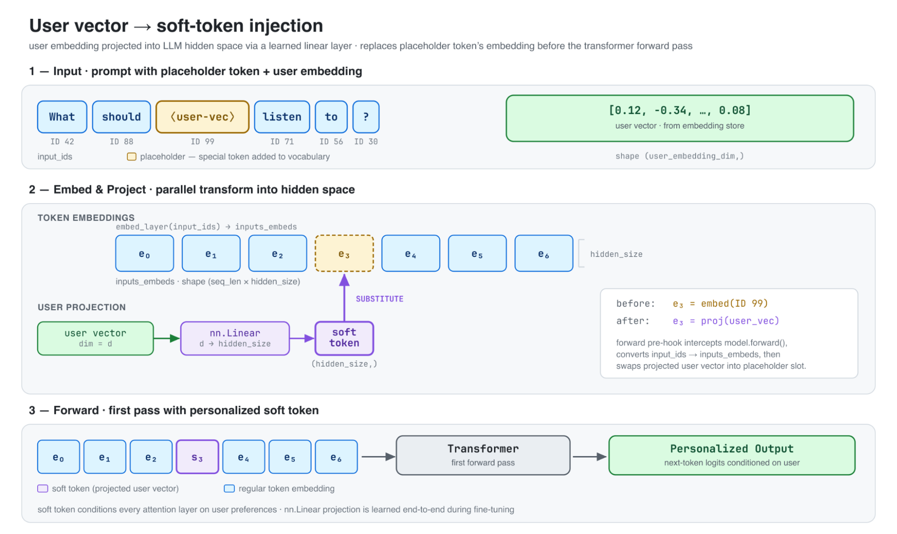
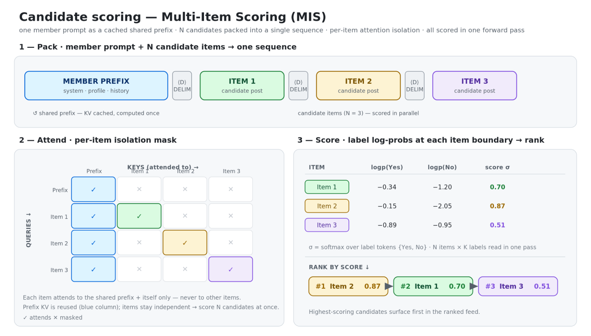
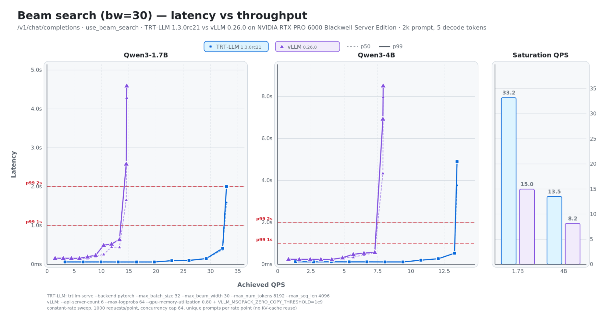
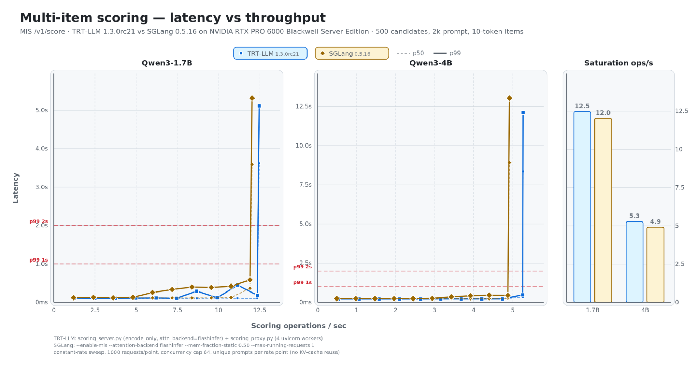

Advancing Generative Recommendation Inference: our collaboration with NVIDIA on TensorRT LLM
Spotify 和 NVIDIA 把生成式播客推荐原本分散在两套推理引擎上的工作统一到 TensorRT-LLM 后，在 Qwen3-1.7B 上，束搜索的成本最多降低 54%，打分的成本最多降低 7%。Spotify 用语义 ID 做推荐，线上一个请求要用到三种推理：用束搜索生成候选、给一批现成候选逐个打分、把用户向量作为一个额外的 token 塞进 prompt。原来这三件事分散在 vLLM 和 SGLang 两套推理引擎里，vLLM 的束搜索又跑不满 GPU，只好退而用低档显卡。两家把缺的功能补进了 TensorRT-LLM，三件事统一到一个引擎里跑。
Spotify 用语义 ID 做播客的生成式推荐，线上一个请求要用到三种推理：用 beam search 生成候选、给一批现成候选逐个打分、把用户向量作为一个 soft token 塞进 prompt。原来这三件事分散在 vLLM 和 SGLang 两套推理引擎里，vLLM 的 beam search 又跑不满 GPU，只好退而用低档显卡。Spotify 和 NVIDIA 把缺的功能补进了 TensorRT-LLM，三件事统一到一个引擎。在 Qwen3-1.7B 上，beam search 的成本最多降低 54%，打分的成本最多降低 7%。
我的判断：已经或准备把生成式推荐搬上线的团队值得读。它不是一篇方法论文，而是一份很具体的工程记录：生成式推荐需要的推理功能，和聊天场景很不一样，主流开源引擎各自只支持一部分。这篇文章把需求拆得很清楚，也给出了补齐之后的吞吐对比。最有参考价值的是三个需求本身，几乎所有用语义 ID 做召回、用大模型做排序的团队都会碰到。
背景：一个推荐请求要用到哪几种推理
2026 年 1 月，Spotify 在播客推荐上线了基于大模型的生成式召回。做法沿用了 PLUM（一篇把预训练大模型改造成生成式推荐模型的论文）的思路：每个播客用一串语义 ID 表示，模型读完用户信息后，一个 token 一个 token 地生成这串编码，生成出来的编码再映射回具体的播客。

要把这套系统做成能服务多个页面的线上服务，推理引擎得同时支持三件事。
第一件是 beam search。生成编码时不能只走一条最可能的路径，要同时保留若干条分数最高的前缀，每一步扩展、剪枝，最后留下的多条完整编码就是候选播客。所以引擎不仅要支持 beam search，还要能一次把多条 beam 的结果都返回，而不是只返回最好的一条。
第二件是候选打分。有时候候选已经有了，只需要大模型判断哪个更好。做法是把候选放进 prompt，读出模型对“是”或“否”这类标签 token 的对数概率，按概率排序。
第三件是个性化。推荐必须知道是谁在听，而 Spotify 已有一套成熟的稠密用户向量。如何把这个向量交给大模型，是另一个需要引擎支持的功能。
beam search 为什么在 vLLM 里跑不满 GPU
一月份上线时用的是 vLLM。它是最常用的开源推理引擎之一，普通的补全请求做得很好，但 beam search 的实现比较弱。文章点出了两个原因：一是 vLLM 的 beam search 在核心 GPU 引擎之外实现，很多调度工作落在 CPU 上，CPU 成了瓶颈；二是会重复计算没填满的 KV 块，给 GPU 加了额外的活。我的理解是：beam search 在引擎外面实现，每扩展一步，相当于把每条 beam 当成新请求重新提交；vLLM 的前缀缓存只复用填满的 KV 块，所以每条 beam 末尾那个没填满的块里已有的 token，每一步都要再算一遍。
结果是高端 GPU 用不满。为了控制成本，Spotify 上线时选择了较低档的显卡，让系统停在一个更合适的负载点上。这是一个很典型的取舍：引擎跑不满高端卡，那就换便宜的卡，单位成本反而更低。
一次给很多候选打分
候选打分最直接的做法是“展开”：每个候选单独发一个请求，各自取出标签概率，最后汇总排序。候选一多，请求数就跟着翻倍，同一段用户前缀也要算很多遍。

SGLang 里有一个更高效的做法，文章提到领英的工程团队也参与了贡献，这里叫它多候选打分。上图把它画得很清楚：用户前缀和所有候选拼成一条序列，通过注意力掩码让每个候选只看用户前缀和它自己，一次前向计算就把所有候选打完分。这样既省掉了“一个候选一个请求”的开销，计算量又只随候选数线性增长。所以 Spotify 打分时用的是 SGLang。
用户向量怎么进 prompt：三种做法
文章比较了三种把用户信息交给大模型的方法，这部分对做大模型推荐的人很有参考价值。
第一种是把用户的收听和互动历史直接写成文字放进 prompt。问题是要把一个用户描述准确，文字会非常长，prompt 一长，延迟就超出请求预算，GPU 用量也上去了。所以这种做法只在小范围用，比如只放用户最近几次实时收听。
第二种是给用户也做语义 ID，和 PLUM 论文的思路一样：在词表里加入表示用户的 token，几个 token 就能代表一个用户，prompt 很短，推理端也不用任何特殊支持。模型要用扩展后的词表微调。早期结果不错，但文章说这条路还需要更多实验，暂时没上线。
第三种效果最好，叫 soft token，来自 Spotify Research 的“Embedding to Prefix”方法。思路是学一个投影，把已有的用户向量映射到大模型的向量空间，变成一个 token 那么大的向量。微调时两部分一起训练：投影层（一层线性变换）端到端地学，大模型本身只更新一部分权重，让它学会利用这个向量。推理时先把用户向量投影过去，插到 prompt 里，再做第一次前向计算。上面的配图就是这个过程。播客推荐用的就是这种方法，Spotify 也在把它推广到内部大模型的其他任务上。
这种做法的好处是能复用推荐系统多年积累的用户向量，又不会让 prompt 变长。代价是推理引擎必须允许你在前向计算前替换某个位置的向量，而大部分引擎默认只接受 token ID。
把三件事搬到 TensorRT-LLM
上线之后，生成式推荐要从播客扩到更多内容和页面，一个高效、好维护的推理栈变得更重要。Spotify 和 NVIDIA 合作的目标很明确：把高效 beam search、打分和用户 soft token 统一到一个引擎里。
TensorRT-LLM 的 beam search 硬件利用率更高，但一开始缺两样东西：SGLang 那样的打分接口，以及 vLLM 那样的 soft token 注入和多条 beam 结果返回。双方补进了下面几项，都已进入正式版本：
| 新增功能 | 首次进入的版本 | 解决的需求 |
|---|---|---|
| beam search 一次返回多条结果 | v1.2.0rc3 | 生成式召回要拿到多条候选编码 |
| trtllm-serve 支持仓库外的自定义模型 | v1.2.0rc4 | 能挂自己的模型扩展 |
| 通过 image_embeds 参数传入多模态向量 | v1.3.0rc0 | 借这个口子传用户向量 |
| Python 接口支持多候选打分 | v1.3.0rc20 | 一次前向给一批候选打分 |
beam search 在 TensorRT-LLM 里是在采样器内部实现的，减少了 CPU 端的开销，再配合“重叠调度”（CPU 准备下一步时 GPU 不停），GPU 利用率更高。原来 C++ 写的采样器也换成了更灵活、更多依赖 PyTorch 的设计，新采样器上的 beam search 比旧实现快了不少。
soft token 是用“仓库外模型”功能做的。Spotify 在 NVIDIA 的帮助下写了一个 Qwen3 扩展插件：用户向量借多模态请求参数传进来，插件负责投影和替换占位 token。这个做法很巧，因为多模态模型本来就要在 prompt 里插入图片向量，复用这条通路就不用改引擎核心。
打分则在 Python 接口上做了和 SGLang 打分接口等价的扩展。目前还需要自己写一层服务，负责高效的分词和请求批处理。
性能：两张基准图怎么读

先看 beam search。测试条件很贴近生成式召回：prompt 2000 token，只生成 5 个 token（一串语义 ID 很短），beam 宽度 30。读图时看延迟曲线在哪个 QPS 开始陡升，那就是系统扛不住的点。vLLM 在 1.7B 模型上大约 15 QPS 就开始失控，TensorRT-LLM 能撑到 33 QPS 左右。
| 场景 | 模型 | TensorRT-LLM 饱和吞吐 | 对比引擎饱和吞吐 |
|---|---|---|---|
| beam search（对比 vLLM） | Qwen3-1.7B | 33.2 QPS | 15.0 QPS |
| beam search（对比 vLLM） | Qwen3-4B | 13.5 QPS | 8.2 QPS |
| 多候选打分（对比 SGLang） | Qwen3-1.7B | 12.5 次/秒 | 12.0 次/秒 |
| 多候选打分（对比 SGLang） | Qwen3-4B | 5.3 次/秒 | 4.9 次/秒 |

再看打分。每次给 500 个候选打分，两个引擎的饱和吞吐几乎一样，TensorRT-LLM 只略高一点。这说明打分这件事 SGLang 本来就做得很好，迁移过去的主要收益不是更快，而是不用再单独维护一套引擎。
成本
文章给的结论是：在 Qwen3-1.7B 上，beam search 负载的成本最多降低 54%，打分负载最多降低 7%。这和上面的饱和吞吐大致对得上：同一张卡能扛的 beam search 请求多了一倍多，每个请求分摊的 GPU 成本自然少一半左右；打分吞吐只高几个百分点，成本也只省一点。
更值得注意的是间接收益。vLLM 时代只能用低档卡，引擎能跑满高端卡之后，选卡的余地也大了。三件事放进同一个引擎，部署、监控、升级都只需要维护一套。
我认为的局限
第一，这是公司工程博客，基准是在固定条件下测的：每个速率点 1000 个请求，并发上限 64，每个 prompt 都不一样、不复用 KV cache。真实线上流量里，同一用户的前缀常常能复用，结果可能不同，需要用自己的流量回放验证。
第二，对比对象的版本和参数是固定的。vLLM、SGLang 迭代都很快，beam search 的实现也在改，半年后再测差距可能变小。读者应该把它当成“当时的瓶颈在哪里”的记录，而不是引擎之间的定论。
第三，打分目前需要自己写服务层，soft token 需要写模型插件。对没有专门推理团队的公司，迁移成本不低。
一个团队可以怎么试
- 先盘点自己的生成式推荐需要哪些推理功能：多条 beam 返回、批量候选打分、向量注入，各自现在由哪个引擎承担。
- 用自己的 prompt 长度、beam 宽度和解码长度测 beam search 的饱和 QPS。生成式召回解码很短、beam 很宽，和聊天负载差别很大，通用基准不能直接参考。
- 如果要把用户向量交给大模型，可以先试 soft token：复用多模态的向量输入通路，通常比改引擎核心容易。
- 打分场景如果已经在用 SGLang 且够用，不必急着迁移；beam search 是更值得优先优化的地方。
一句话结论
生成式推荐的推理需求和聊天不一样，beam search、批量打分、向量注入缺一不可；把它们补齐并统一到一个能跑满 GPU 的引擎里，beam search 的成本能降一半左右。
| 维度 | 评价 |
|---|---|
| 问题重要性 | 高。生成式推荐上线后，推理成本和引擎功能缺口是绕不开的问题 |
| 方法创新性 | 中。主要是工程整合，soft token 复用多模态通路的做法值得借鉴 |
| 实验证据 | 中。有清楚的吞吐和延迟基准，成本降幅来自真实业务，但测试条件固定 |
| 工程成本 | 中高。要写模型插件和打分服务层，适合有推理团队的公司 |
| 是否值得尝试 | 值得。用语义 ID 做生成式召回、beam search 成本高的团队可以优先评估 |